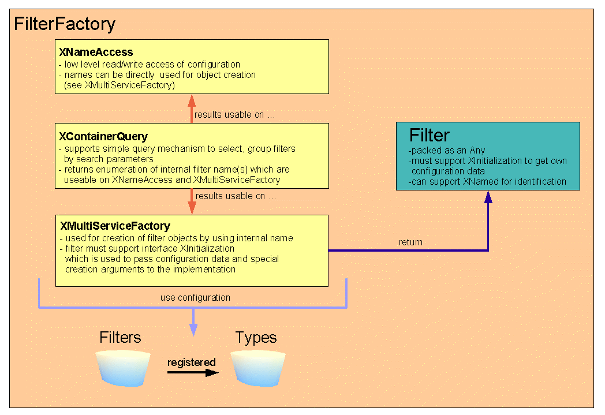
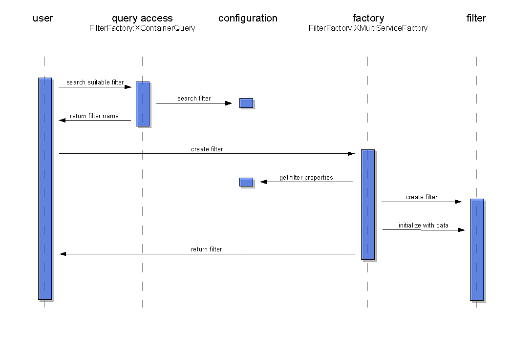

Our current mechanism to search and create filters which are registered for types is not really understandable for api user. This proposal describes a better (but incompatible) way to make it easier.
Please see the follow list corresponding with the graphic below to get all information.
com.sun.star.container.XNameAccess
(unchanged)
Use
it for a low level read/write access to pure filter configuration in
the same manner as now. The interface works with internal filter
names only and supports set/get filter properties.
draft.com.sun.star.container.XContainerQuery
(draft)
Use
it to search/group filters by special parameters. Returned
enumeration contains filters wich match your search parameters. They
are represented by flat data structures as Sequence<PropertyValue>
including all properties of them. So it's not neccessary to use
XNameAccess again to get the properties. Internal name of filters
will be a part of returned data structures too and can be used on
interface XMultiServiceFactory to create the filter objects.
old
The
method „createInstance()“ called with an internal filter
name wasn't supported. Same method called with an internal type name
searched for any suitable (registered default) filter in the
configuration and returned a created filter object.
The method
„createInstanceWithArguments()“ does the same as
„createInstance()“. The optional argument „FilterName“
suppresses the search and create the specified filter object by name
directly.
new
Both
methods of this interface create filter objects by internal name
only. There exist no optional search mechanism any longer. The
return value is the created filter object, initialized with his own
configuration data by calling
„XInitialization::initialize()“.
Format of
initialization data:
Sequence<Any>[0] = filter config
data as Sequence<PropertyValue>
Sequence<Any>[1..n] =
optional arguments of „createInstanceWithArguments()“
directly

XMultiServiceFactory methods doesn't support the creation of filters using internal type names any longer.
This should be a part of new interface XContainerQuery. Please have a look on http://api.openoffice.org/source/browse/api/udkapi/com/sun/star/container/XContainerQuery.idl too, to get more information about the generic functionality of this interface.
Filter implementations must support XInitialization to get her own configuration data and optional arguments of XMultiServiceFactory::createInstanceWithArguments().
They
can implement XNamed() to identify herself. User of a filter
object can use returned internal name on service FilterFactory to
get more information about it.
„getName()“ must
return the internal name of the filter
„setName()“
can be ignored or should be used to rename the filter inside the
configuration by using mechanism of service FilterFactory.
=>
Discussion: Should it be allowed to rename a filter during
runtime?
=> I would say: „NO“! Nobody can support
a right error handling for name clashes if a filter with same name
already exist. This functionality should be a part of the setup or
an administration process.
Follow sequence diagram should show creation of a suitable (default) filter for a detected type. First the user try to get the internal filter name by using XContainerQuery interface with the internal type name and some optional search parameters. The returned filter name can be used on another interface XMultiServiceFactory to create the filter object directly. Filter will be created and initialized (by calling XInitialization::initialize()) with his own configuration data by used FilterFactory.
